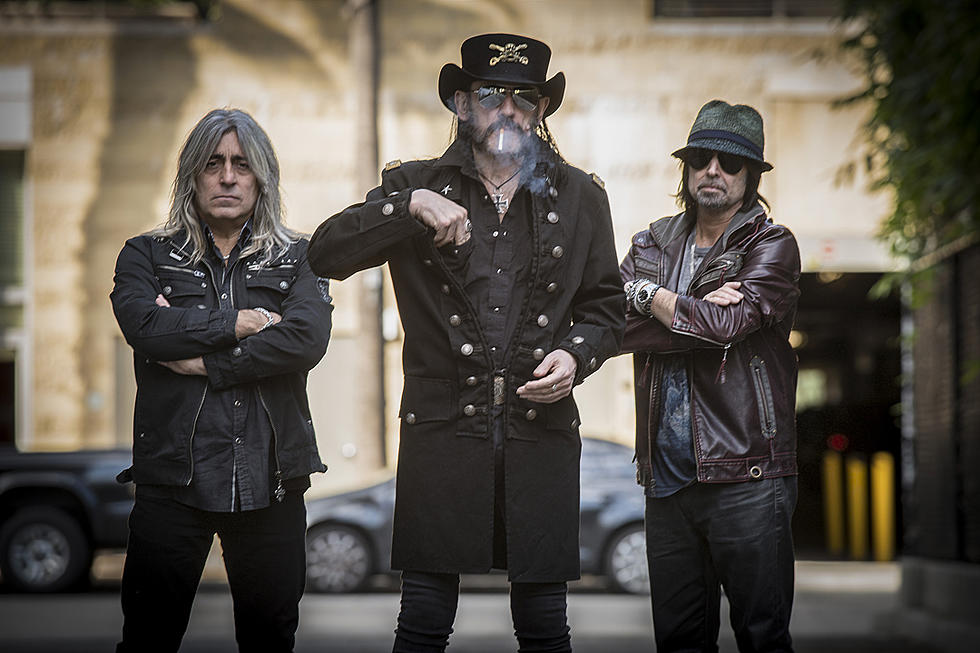
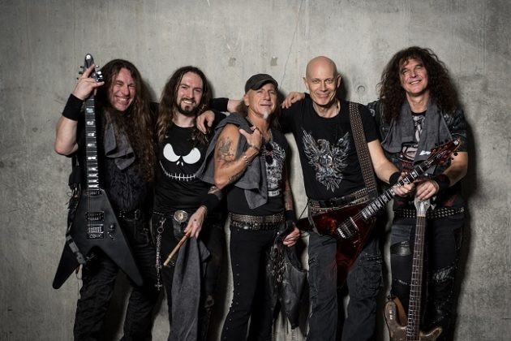

Speed Metal
Influences
Speed Metal is pretty much a combination of Heavy Metal and hardcore punk, which would be the first of dozens of fusions between the two genres.
Description
Speed Metal is incredibly technically demanding music, it also usually has lower quality production, which coupled with the instrumentation, leads to a very abrasive and heavy sound. Speed Metal is basically a short lived precursor to Thrash Metal, it's just Thrash Metal, with a bit less hardcore influence than thrash has, making it a bit more melodic and less abrasive. It's pretty much the "gap genre" between thrash metal and heavy metal.
Brief History
The first band, and the only band from this subgenre who would really see any lasting popularity, is Motorhead, fronted by Lemmy (also known as God). Deep Purple's song, Speed King, is commonly recognized as the song that gave the genre it's name. Bands like Deep Purple and Motorhead began to employ distorted bass tones and double kick drums, which is what really seperated it from run of the mill heavy metal. Speed metal's popularity really only lasted for a few years in the late 70s and early 80s.
Examples
- Motorhead
- Exciter
- Anvil
- Accept
- Annhiliator
- Enforcer